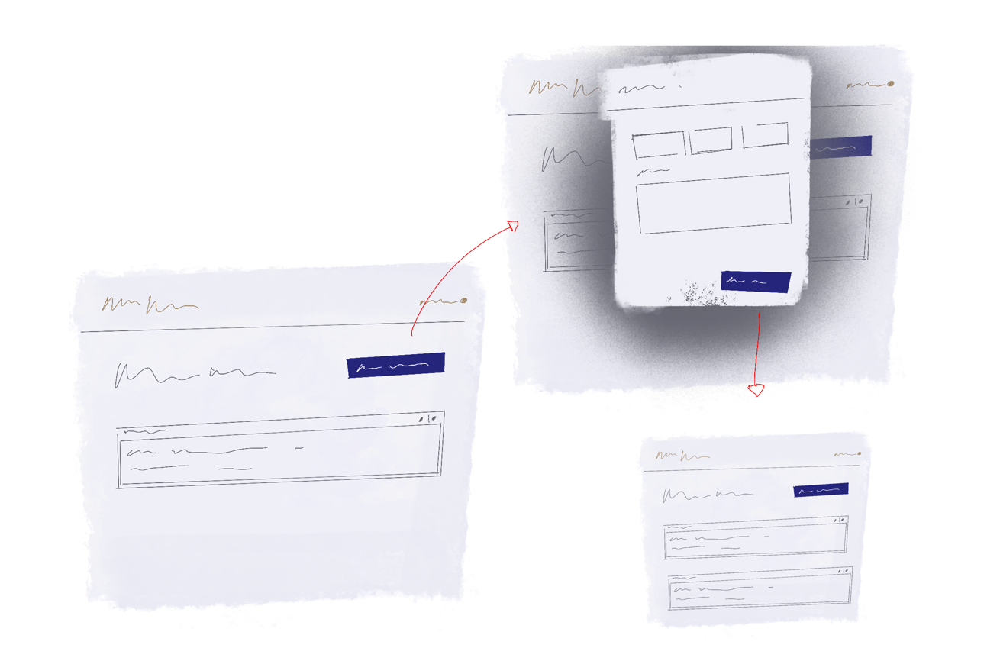
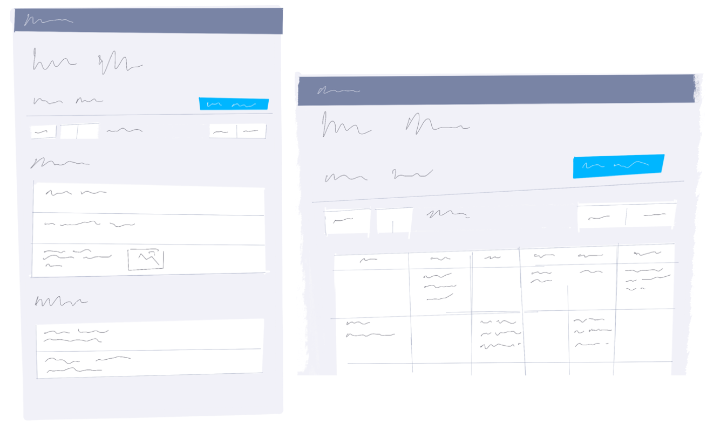
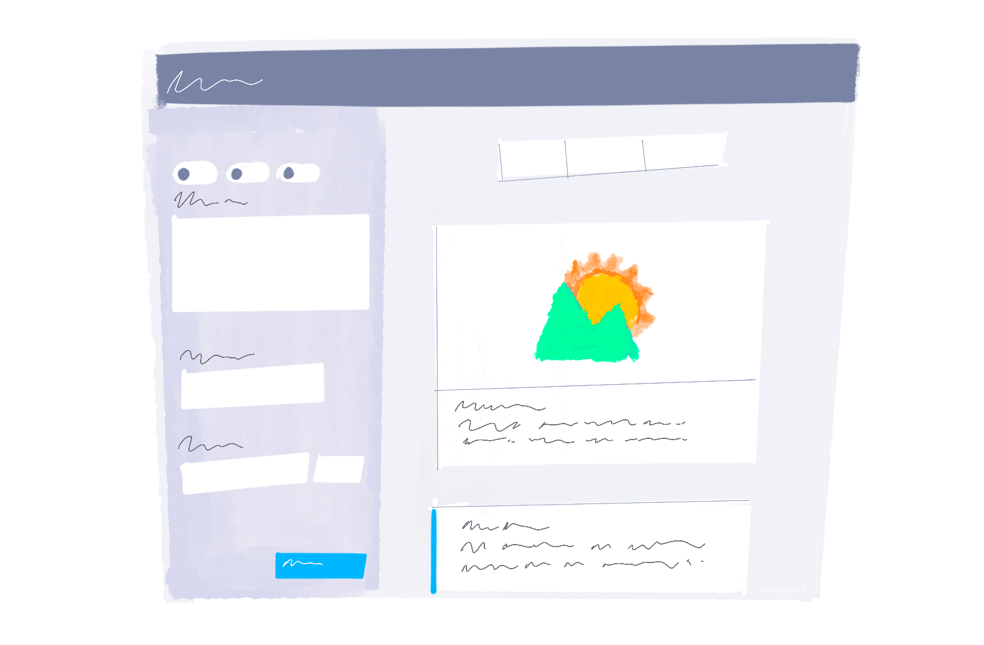

Quando projetei uma ferramenta para marketing nas mídias sociais
Neste relato eu sintetizo o trabalho de desenvolvimento de produto realizado em 9 meses como designer em um time multidisciplinar
O produto é uma plataforma com as ferramentas para que uma empresa seja capaz de operar a seguinte estratégia de marketing digital: atrair visitantes, convertê-los em leads de marketing e relacionar-se com estes para identificar oportunidades de negócio.
Na ocasição a direção de produto foi melhorar a funcionalidade de agendamento em mídias sociais. Um componente importante para a proposta de valor tudo-em-um da plataforma.
Analisamos as alternativas no mercado, entrevistamos clientes e especialistas em marketing nas mídias sociais. No papel de designer liderei análises heurísticas, pesquisas de mesa, testes de usabilidade, facilitação de ideações e prototipação de opções.
Identificamos que a frequência de publicações era um fator associado ao sucesso dos clientes e por isso apostamos em explorar o conceito de agenda.
Nas pesquisas identificamos a insegurança com o formato da publicação como um impedimento para o uso. Por isso apostamos em incluir a pré-visualização do conteúdo na interface de edição.
Acompanhar o retorno das ações de marketing é um dos valores percebidos pelos clientes. Desenvolvemos a capacidade de monitorar o número de leads originados de uma publicação nas mídias sociais. Uma funcionalidade então difícil de ser encontrada em produtos concorrentes.
Problemas de usabilidade evidentes e a falta de um diferencial com relação as alternativas afastavam os clientes desta funcionalidade. Com nossas apostas percebemos sinais positivos nos indicadores de adoção e retenção do produto.